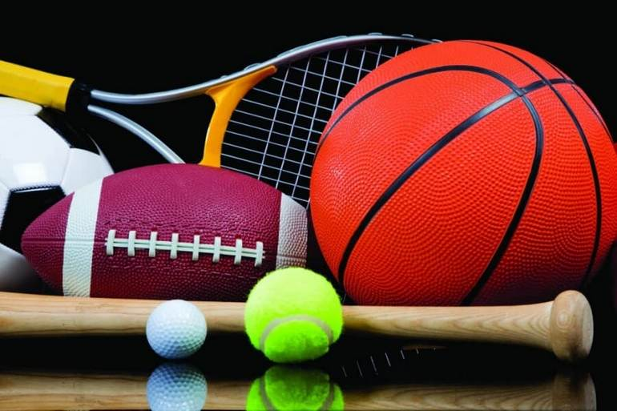

Спорт - это модно!
Многие социальные исследования доказали, что люди, занимающиеся спортом регулярно более успешны в карьере и личной жизни. Происходит это потому, что спорт помогает улучшать не только физическое, но и психологическое здоровье. У спортивного человека уравновешенная психика, более продуктивна и эффективна рабочая деятельность, а так же менее выражена тревожность и уровень стресса. Физические нагрузки стимулируют выработку в организме гормона счастья, в результате чего после занятий спортом человек пребывает в состоянии легкой эйфории. Спорт позволяет ощутить себя частью огромной системы, в которой каждый способен стать лидером и добиться успеха.О том, что физическая активность помогает избежать множества проблем со здоровьем, знают все. Риск появления сердечнососудистых заболеваний, ожирения, проблем с позвоночником и рака у спортивных людей намного ниже, чем у людей физически не активных. В период проведения международных соревнований, чемпионатов или олимпиады интерес к спорту увеличивается в несколько раз. Вдохновленные успехом спортсменов, их достижениями и энергетикой люди начинают заниматься спортом. Накануне старта чемпионата мира, новости футбола и спорта интересуют практически всех. Даже далекие от физических нагрузок люди периодически заглядывают на сайты спортивной тематики, чтобы быть в курсе всех событий. Спорт является идеальным средством для развития силы воли. Как правило, любая спортивная дисциплина включает в себя достижение определённого результата, путь к которому прокладывается через различные преграды в виде сомнений, лени и боли. Следовательно, когда человек регулярно занимается спортом, то он одновременно тренирует и свои волевые качества. Занятие спортом позволяет человеку удовлетворить личностные потребности в общении и обзавестись новыми знакомствами. Довольно-таки часто, люди занимаются физической культурой в специально-отведённых для подобной деятельности местах (стадионы, спортивные площадки и залы) совместно с остальными спортсменами, с которыми в итоге находят общие интересы и продолжают общение уже в повседневной жизни.Физические упражнения являются наилучшим методом борьбы с лишним весом. Никакие диеты и, что намного хуже, препараты не способны произвести такой же эффект в процессе похудения, как спортивные нагрузки. К тому же, если человек с детства активно занимается спортивной деятельностью, то такое заболевание как «ожирение» его точно никогда не настигнет. Благодаря спорту можно обзавестись не только отличным здоровьем и настроением, н о и неплохим источником дохода. В данном случае речь идёт о профессиональных спортивных дисциплинах, которые позволяют многим спортсменам заниматься любимым делом и при этом зарабатывать себе на жизнь. Ну и самым главным здесь является то, что такой жизни может достичь любой человек, у которого есть не только желание стать квалифицированным спортсменом, но и необходимые навыки для достижения этой цели. Помимо всего вышеперечисленного, спорт способен помочь Вам справиться с эмоциональным напряжением, гневом и депрессией; повысить продуктивность и работоспособность мозга; обрести высокую самооценку и уверенность в себе.